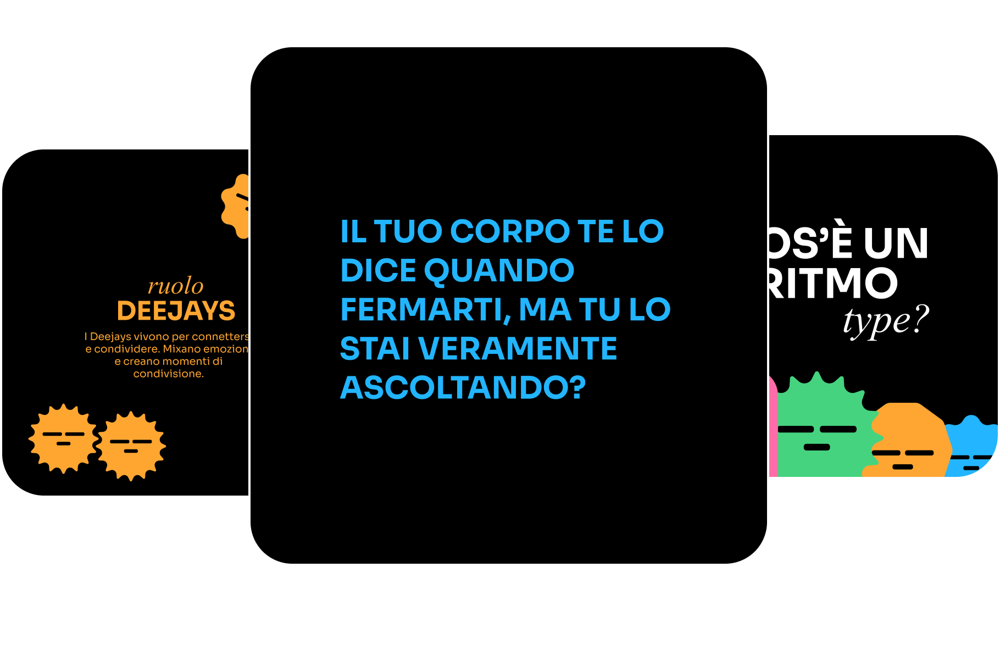

Ferma il loop delle tue abitudini, scegli i mezzi giusti per te e sincronizzati con il tuo benessere.
La Generazione Z vive in un mondo iper-connesso e carico di pressioni sociali che la spinge a stare costantemente al passo, sacrificando
spesso il proprio benessere.
La velocità che caratterizza la realtà di questa generazione genera aspettative irrealistiche e li allontana dal loro ritmo naturale,
con conseguenze come ansia, stress e insoddisfazione.
Il pericolo più grande è proprio quello di trovarsi intrappolati in un ciclo infinito, senza mai fermarsi e domandarsi se il ritmo che stanno
seguendo è davvero quello giusto per i giovani di oggi.
Per questa generazione, consapevole dell’importanza della cura di sé, rispettare il proprio ritmo diventa essenziale per raggiungere un
autentico benessere. Tuttavia, tradurre tale consapevolezza in azioni concrete richiede coraggio: rallentare, ascoltare i segnali del corpo
e mettere in discussione schemi di vita dettati da convenzioni sociali.
L’intersezione tra i contributi dei tre partner, Trenord, Headspace e Spotify, dà vita a un progetto che pone il benessere personale al centro. Tra questi, risulta fondamentale la mediazione di Syncro: al primo, fornisce il modo in cui affrontare e vivere il contesto della mobilità in linea con il proprio benessere, al secondo garantisce uno spazio in cui entrare in contatto con il target della GenZ, mentre all’ultimo offre visibilità ed ingaggio, tanto alla piattaforma in sè, quanto alle playlist.
Trenord, player della mobilità regionale, rappresenta il contesto in cui il progetto prende vita. La rete ferroviaria diventa il luogo ideale per trasformare il tempo di viaggio in un momento dedicato al benessere, consentendo ai fruitori di vivere un’esperienza di ascolto e riflessione. La mobilità si fa così non solo funzionale, ma anche una cornice per la crescita personale.
Spotify, leader nella fruizione di contenuti audio, contribuisce al progetto favorendo l’ascolto musicale personalizzato. Grazie al suo algoritmo per la creazione di playlist, gli utenti possono immergersi in un’esperienza audio su misura, che accompagna e amplifica i momenti di riflessione e connessione con sé stessi durante il viaggio.
Headspace, riferimento globale nel campo della mindfulness, porta il progetto a un livello più profondo favorendo l’ascolto di sé. Le sue conoscenze sulla consapevolezza e l’equilibrio mentale hanno permesso di introdurre interruzioni sonore studiate per promuovere momenti di introspezione e benessere mentale, trasformando l’esperienza sonora in uno strumento di crescita interiore.
Data la necessità di approcciare la tematica in maniera approfondita, la nostra campagna si divide in tre fasi strategiche, quali interruzione, consapevolezza ed empowerment, che guidano l’utente attraverso l’ascolto attivo di sé.
Il primo passo consiste nel rompere l'automatismo quotidiano del nostro pubblico, attirarando l’attenzione attraverso i nostri canali di comunicazione, come la come la campagna Out Of Home (OOH), il sito web e i profili Instagram e TikTok, predisponendo alla riflessione.
Affissioni
Floor ADV
Durante la quale il test RytmoType aiuta a scoprire il proprio ritmo e a riflettere sulle scelte quotidiane legate alla mobilità.
Offre strumenti pratici e contenuti di approfondimento attraverso un canale Instagram dedicato, con consigli e spunti sul ritmo e il benessere personale, per supportare il pubblico nella trasformazione della consapevolezza in azione concreta.
CONTENUTI INSTAGRAM
Il concept e il design dei vari RitmoType prendono ispirazione dal mondo musicale e dal suo vocabolario. I nomi di ciascuno richiamano termini specifici della musica, come The Ad-lib o The Bridge, mentre le vibe (Singer, Author, Deejay e Producer) rimandano a ruoli chiave del panorama sonoro.

Anche l’identità visiva riflette questa ispirazione: la palette cromatica è composta da quattro colori principali, ciascuno associato ad una categoria di RitmoType, e utilizza quattro forme distintive che alternano spigolosità e rotondità in base al ritmo rappresentato.
Quale sarà il futuro della mobilità in relazione al ritmo di vita e al benessere delle giovani generazioni?
Questo quesito è stato il punto di partenza della ricerca. Dal car pooling allo sharing, dalle auto elettriche ai monopattini, sono le generazioni più giovani a modificare le abitudini e i paradigmi della mobilità, trasformando radicalmente tutti quei comportamenti una volta considerati immutabili.
Oggi più che mai, le esigenze dei giovani si stanno evolvendo a favore di tematiche che non riguardano esclusivamente la praticità e l’efficienza, bensì anche aspetti più profondi, tra cui il benessere personale.
La Generazione Z è già molto sensibile al tema del benessere mentale: il 72% dei giovani considera la salute mentale importante, ma spesso fatica a mettere in atto l’ascolto di sé. La gestione del tempo e delle responsabilità rappresenta una sfida quotidiana, e il rispetto del proprio ritmo è essenziale per ridurre lo stress derivante da scadenze pressanti e impegni. Ottimizzare il tempo e gestire lo stress diventa essenziale, ma in alcuni contesti, come la mobilità, queste sfide si amplificano.
Fonte: https://www.wearepion.com/blog-posts/self-care-gen-z-mental-health
Secondo il sondaggio da noi svolto su 204 utenti appartenenti alla Gen Z e riguardante le abitudini all’interno del contesto della mobilità:
Le parole utilizzate ed associate più frequentemente dall'utenza alla mobilità del futuro sono state:
La maggioranza degli intervistati descrive così il proprio ritmo di vita:
I dati evidenziano come le scelte di mobilità non siano dettate unicamente da esigenze pratiche, ma profondamente influenzate dalla frenesia dei contesti in cui gli intervistati vivono. Questa condizione spinge, spesso inconsapevolmente, a privilegiare mezzi più rapidi, seguendo sempre di più bias comportamentali che finiscono per consolidare abitudini poco equilibrate.
Il test RitmoType è uno strumento innovativo, composto da 16 domande a risposta multipla, progettato per aiutare le persone a esplorare i propri
comportamenti quotidiani, con un focus particolare sulla mobilità.
I risultati del test vengono restituiti attraverso una scheda personalizzata, progettata per fornire un'analisi chiara e intuitiva delle dimensioni
fondamentali del profilo. La restituzione mira a rendere i dati informativi e coinvolgenti, impiegando un linguaggio che favorisca l'identificazione
e l'empatia.
Ogni RitmoType è descritto attraverso tre parametri principali: Vibe, Frequenza e Andamento. La Vibe definisce il ruolo, Author, Singer, Producer e Deejay, e come questo influenzi le scelte quotidiane. La frequenza aiuta a comprendere se l’individuo tenda a ritmi più veloci o più lenti. Infine l'Andamento può essere regolare o irregolare e rappresenta la variabilità del ritmo nel tempo, evidenziando le modalità con cui si gestiscono, ad esempio, cambiamenti e imprevisti.
Inoltre, è accompagnato da una bio ispirata al mondo musicale, che sintetizza in modo originale e metaforico le caratteristiche del profilo in questione.
Ciascun Ritmo è collegato a pratici consigli di vita di tutti i giorni, concentrandosi della mobilità quotidiana e offrendo così spunti di riflessione per ottimizzare i propri spostamenti.
Ogni RitmoType rappresenta una combinazione unica di preferenze, comportamenti e inclinazioni legate al ritmo della vita personale e professionale. L'analisi dei cosiddetti Hit (punti di forza) e Flop (aspetti migliorabili) permette di individuare con precisione le qualità che ciascun RitmoType esprime in modo naturale, insieme agli aspetti che potrebbero limitare il benessere o l’efficacia delle scelte quotidiane.
La scheda include suggerimenti su quali RitmoType sono più affini per creare sinergie positive e collaborazioni. Attraverso questa metodologia, i RitmoType diventano uno strumento potente sia per la comprensione individuale, ma anche e soprattutto per il miglioramento continuo, con benefici personali e relazionali.
Con questo test, non solo si acquisisce una maggiore consapevolezza di sé, ma si apre anche la strada verso un equilibrio più autentico e soddisfacente.
Nota: il test non si basa su uno studio scientifico, ma è uno strumento esplorativo che mira soltanto a stimolare una riflessione personale.
Un elemento distintivo del progetto Stop The Loop sono le Stoplist, playlist realizzate con Spotify per ogni RitmoType sulla base delle proprie preferenze musicali individuali utilizzando l'algoritmo di profilazione dell'app. Queste sono progettate per far riflettere la persona, al fine di sincornizzarsi con se stesso. Le playlist hanno la caratteristica di contenere delle interruzioni, denominate Stop The Loop, ossia spazi sonori realizzati in collaborazione con Headspace e narrati dal team Syncro che intervallano la selezione di brani.
Questi interventi non solo incoraggiano un ascolto attento di sé, ma fungono anche da momenti di riflessione per verificare se il risultato del test rappresenta effettivamente il ritmo più adatto alle proprie esigenze. Studiate per favorire un processo di interiorizzazione del proprio RitmoType, gli Stop The Loop offrono inoltre l’opportunità di esplorare potenziali alternative di ritmo.
Siamo un gruppo di giovani designer che offre servizi di progettazione nel settore della comunicazione. La nostra vision è rappresentare lo spirito di cambiamento della nostra generazione, promuovendo la comunicazione come strumento identitario e strategico, capace di valorizzare tanto il singolo quanto il brand.

Il nostro team poliedrico nasce dall’incontro tra background di product e communication design, creando un mix di competenze che spaziano dall’analisi strategica alla creatività pura. Crediamo nel ritmo come ottica interpretativa ed operativa per il raggiungimento del benessere personale.
Attraverso il nostro lavoro, sensibilizziamo e forniamo gli strumenti per compiere scelte più consapevoli, aiutando a sciogliere quei nodi invisibili che a volte ci trattengono, quali bias cognitivi, automatismi e schemi comportamentali limitanti, trasformandoli in spunti di cambiamento positivo. Per Syncro, la comunicazione non è solo un mezzo, ma un potente catalizzatore di evoluzione e consapevolezza.
Instagram: @ari.battle
Email: arianna.btt@gmail.com
Instagram: @obliosoft
Email: brolattiandrea@gmail.com
Instagram: @ambra_cela_
Email: ambracela17@gmail.com
Instagram: @alicupisti
Email: cupistialice@gmail.com
Instagram: @aannaden
Email: anna.denicolo.26@gmail.com
Instagram: @tainitostuff
Email: taino934@gmail.com